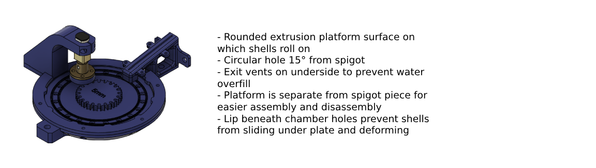
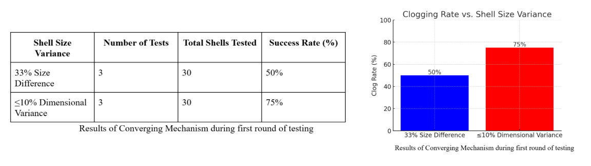

MAE 156B Senior Design Project
General Atomics Foam Shell Culling Station
Background
This project was created to design, build, and test a Foam Shell Flow Culling Station to automate the sorting and inspection of foam shell targets for inertial fusion energy (IFE) research at General Atomics, a leader in defense and energy innovation. Foam shells, critical components in IFE, require precise tolerances in diameter, sphericity, wall thickness, and uniformity to ensure successful ignition under laser compression. The system replaces manual inspection and sorting of shells ranging from 3–6 mm in diameter.
Converging Component
The function requirements of this component is to intake a large beaker of water and foam shells from an operator and to dispense out a single-file line of shells. The shells are to pass through the system at a-n optimal rate of 1 shell per second, or separated by a maximum of 15 seconds. This device needs to be at least semi-wet to ensure that the shells are either fully or partially submerged in water to prevent drying or sticking to surfaces.
The chosen final design was the angled pyramidal hopper, due to the ease of utilizing gravity to control the flow and slower flow rate in comparison to the cone. The entry also provides plenty of space to pump water into the system to prevent clogging and keep the hopper filled with water.

The final timing device design was chosen to be the rotating plate due to its simplicity and control over the rate at which shells were fed into the system. The main considerations of choosing the design of the converging and timing mechanism was the efficiency of the inlet reservoir and viability of separating of the shells. The hopper was designed with the optimal exit angle of 80 degrees, for reducing variability of clogging geometries, and with the capability of holding a large volume of water and shells. The design for the timing device was chosen for its efficiency and ability to sufficiently separate shells for the sensor to detect individual shells. By experimentally timing the amount of water that exited the system over a length of time, the flow rate of the pump and design of the timing device could be determined to keep the system full at all times.
Results
When testing the first component, the converging mechanism and timing device, our hopper clogged on average 50% of the shells if the shells differed from the designed size by more than 33%. If the shells were oversized, they wouldn’t fit through the hopper exit chamber, and if they were too small, they were susceptible to piling up and clogging that way. For example, if the design was intended for shells with an outer diameter (OD) of 6mm and 4mm shells were fed, clogging was imminent. However, inserting shells with similar dimensions to those designed for lead to much less clogging and more effective convergence. This led us to narrowing the scope of the project to only testing shells within a 10% dimensional variance to the largest size it was designed for. We built two separate hoppers for sizes 3-4mm and 5-6mm, along with their respective rotating plate sizes. Since they are all modular and attached to one another, they are easy to swap out for the operator.
